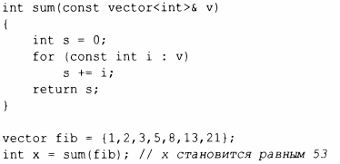

⇐3.5.5 Статические проверки Содержание 3.6.1 Передача аргументов⇒
Основной и рекомендуемый способ передачи информации из одной части программы в другую - через вызов функции. Информация, необходимая для выполнения задачи, передается в качестве аргументов функции, а полученные результаты передаются обратно как возвращаемые значения. Например:
Существуют и другие пути передачи информации между функциями, такие как глобальные переменные(§ 1.5), указатели и ссылки в качестве параметров (§3.6.1) и совместно используемое состояние в объекте класса (глава 4, "Классы"). Глобальные переменные крайне не рекомендуются к применению как известный источник ошибок, а разделяемое состояние обычно должно использоваться только функциями, совместно реализующими точно определенную абстракцию (например, функциями-членами класса, §2.3).
Учитывая важность передачи информации в функции и из них, неудивительно, что имеется множество способов ее осуществления. Ключевыми вопросами при этом являются следующие.
Поведение по умолчанию для передачи аргументов в функцию и возврата значений из функций - "копирование" (§ 1.9), но некоторые копирования могут быть неявно оптимизированы и превращены в перемещения.
В примере sum () результирующий int копируется из sum (), но копировать потенциально очень большой вектор в sum () было бы неэффективно и бессмысленно, поэтому аргумент в эrу функцию передается по ссылке (на что указывает символ &; § 1.7).
У функции sum () нет никаких причин изменять свой аргумент. Эта неизменяемость указывается путем объявления аргумента vector как const (§ 1.6), так что vector передается в функцию посредством константной ссылки.